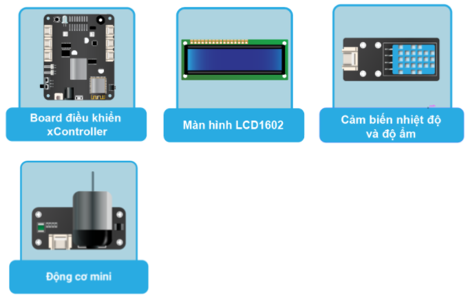

Project 2: Quạt thông minh
Mục tiêu
Chúng ta đã học cách đọc và hiển thị nhiệt độ và độ ẩm của môi trường ở bài học số 9. Dựa vào đó, chúng ta sẽ làm cho quạt trong nhà trở nên thông minh hơn và biết lúc nào cần bật, lúc nào cần tắt. Điều này thật sự hữu ích khi vào ban đêm, lúc đang ngủ, chúng ta có thể tránh bị bệnh do quá lạnh hoặc quá nóng làm mất giấc ngủ.
Ngoài ra, bài học này sẽ giúp bạn làm quen với 1 module Output mới là động cơ mini. Động cơ là một thiết bị điện tử rất phổ biến trong cuộc sống của chúng ta (như quạt, động cơ xe, máy bơm nước…). Động cơ khi được cung cấp điện sẽ làm xoay trục động cơ, từ đó tạo nên nhiều ứng dụng khác nhau.
Thiết bị cần sử dụng
{kind=link}
Kết nối phần cứng

Viết chương trình
Mở phần mềm Arduino IDE.
Copy đoạn code sau, click vào nút Verify để kiểm tra lỗi chương trình. Sau khi biên dịch không báo lỗi, bạn có thể nạp đoạn code vào board.
#include <LCD_1602.h>
#include <Mini_Fan.h>
LCD_1602 lcd(0x21);
DHTesp dht;
MiniFan fan(D3_1, D3_2);
unsigned long lastCheckTemp = 0; // lưu thời gian cập nhật nhiệt độ
void setup(void) {
Serial.begin(9600);
lcd.begin(D1_1, D1_2);
lcd.backlight();
dht.setup(D2_1, DHTesp::DHT11);
}
void loop(void){
// lấy thời gian hiện tại
unsigned long currentMillis = millis();
if (currentMillis - lastCheckTemp >= 5000) {
// đã quá 5s kể từ lần cập nhật nhiệt độ cuối
// cần cập nhật lại
lastCheckTemp = currentMillis;
lcd.clear();
float h = dht.getHumidity();
float t = dht.getTemperature();
if (dht.getStatus() != 0) {
lcd.print("Read sensor faiLED!");
return;
}
lcd.setCursor(0, 0);
lcd.print("Temp: "); lcd.print(t); lcd.print("C");
lcd.setCursor(0, 1);
lcd.print("Humidity: "); lcd.print(h); lcd.print("%");
if (t < 32){
Serial.println("Tắt quạt");
fan.off();
} else{
Serial.println("Bật quạt");
fan.on();
}
}
}
Giải thích chương trình
Chương trình trên sẽ tương tự như bài học số 9: Đọc và hiển thị nhiệt độ, độ ẩm lên màn hình LCD. Tuy nhiên, có một sự thay đổi đó là chương trình này không dùng hàm delay() để chờ 2 giây sau mỗi lần cập nhật, mà chúng ta sẽ dùng một phương pháp hay hơn: lưu thời gian lần cuối cập nhật và liên tục kiểm tra xem đã quá 5 giây kể từ lần cuối cập nhật chưa. Nếu đã quá 5 giây thì sẽ tiến hành cập nhật.
unsigned long currentMillis = millis();
if (currentMillis - lastCheckTemp >= 5000) {
// đã quá 5s kể từ lần cập nhật nhiệt độ cuối
// cần cập nhật lại
lastCheckTemp = currentMillis;
Hàm millis() trả về tổng số mili giây, tính từ lúc chương trình bắt đầu chạy cho đến hiện tại.
if (t < 32) {
Serial.println("Tắt quạt");
fan.off();
} else {
Serial.println("Bật quạt");
fan.on();
}
Đồng thời, chúng ta cũng kiểm tra với nhiệt độ hiện tại thì có nên bật quạt không với ngưỡng là 32 độ. Nếu quá 32 độ thì quạt sẽ được bật và ngược lại.